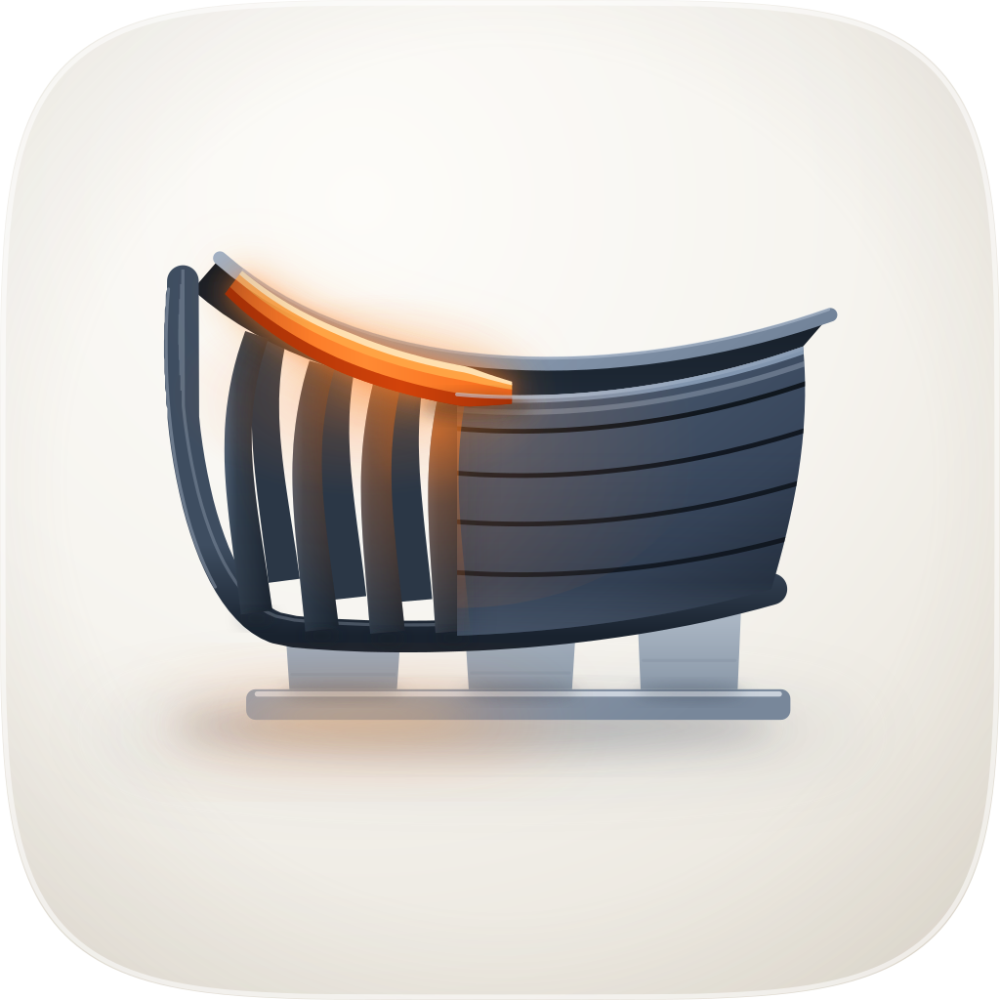
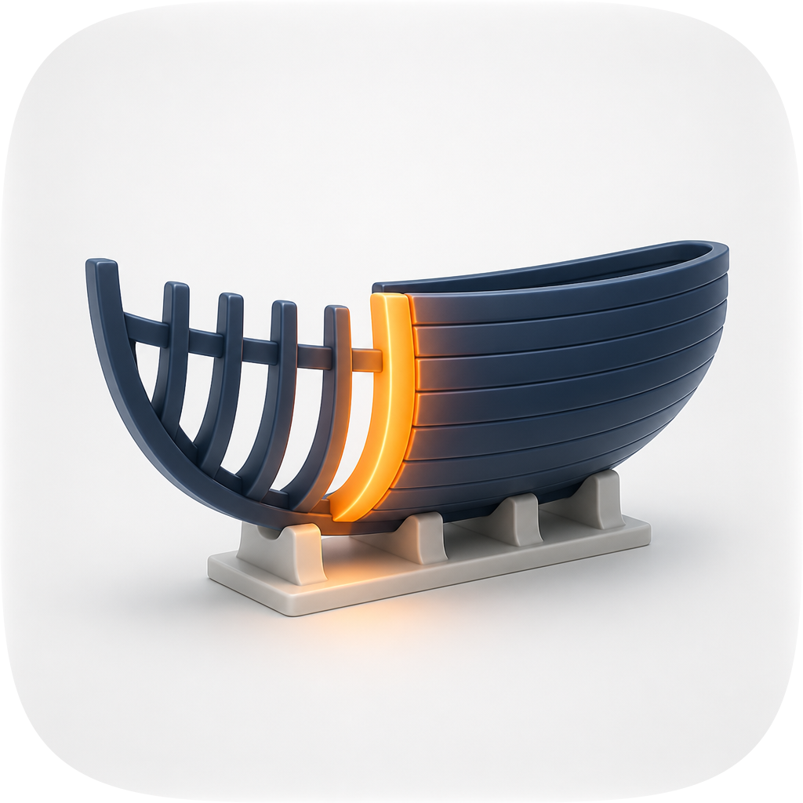
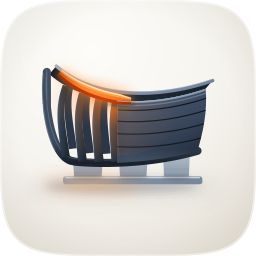
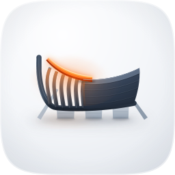
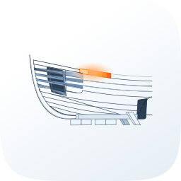
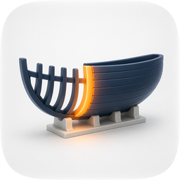
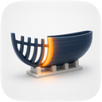
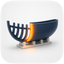
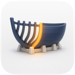
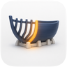

icon.svg exported through the squircle. A graphite hull mid-build, four bare frames open to the left and the planked skin closed to the right, standing on a pale slipway cradle with its sole plate; the one ember plank runs the sheer from the bow, and its light is the only warm thing on the tile.
| Take | Renders at 128 / 64 / 48 / 32 / 16 css px (2× retina sources), plus the 16px squint magnified | Rubric | Verdict |
|---|---|---|---|
| A · icon.svgEngine A — hand-authored layered SVG, emitted by build_icon.py — SHIPS |  |
11 / 12 | Passes all four non-negotiables on the renders left of this cell. Ink bbox centres on (512, 515) after r08; silhouette names "hull in frame" filled black; at 16px the dark mass plus the ember streak still separates it from every sibling on the shelf (16px luminance spread 0.851). Four real layer groups — bg / mid / fg / highlight — carry identity in shape and value, so #10 holds. Docked one point on #7: the cradle measures 1.56:1 against the tile and dissolves by 32px while the hull holds 8.34:1 and the frames 9.98:1. |
| Av1 · icon-A-v1.svgEngine A, pre-loop draft — kept as the loop's before row |  |
10 / 12 | Lost on #8. A flat side elevation with no interior: the blind judge, seeing only renders, wrote that the ember "never attaches to the form" and the hull reads as a squat canoe — which is also the sibling it must not be confused with (create-swe-project). Also docked #7 for the same pale cradle. Its one win is real and recorded: the panel preferred it at 32px, where its smaller mass stayed legible; r07 exists to answer that. |
| B · icon-engineB-arrow-8da398.svgEngine B — Arrow 1.1 vector, briefed from the shared spec |  |
5 / 12 | Hard-fails #1 (it bakes its own rounded-rect ground inside the canvas, so the delivered mask cuts a second corner), #3 (an outline drawing has no fillable silhouette), #4 (the hairlines smear to nothing by 32px) and #7 (roughly 1.3:1 hull against ground). Nothing was salvaged into the master: it read the brief as a technical elevation rather than an object, and its one idea — the sheer battens running the full length — is already carried better by the master's mouth band. |
| B2 · icon-engineB-arrow-1a7fde.svgEngine B — Arrow 1.1, second take (the call that timed out and landed anyway) | 6 / 12 | The better of the two Arrow takes and still not shippable: it bakes a rounded-rect ground (#1), seats the object high with a dead band beneath it (#2), turns its internal hatching to noise by 48px and loses the plank at 16 (#4), floats a pale upper hull at roughly 1.5:1 against a near-white ground (#7), and ships as one flat illustration with no named layers (#10). Its palette is also the blue family create-swe-project already owns. One idea was worth keeping and is in the master: the plank crossing the frames at a visible angle rather than lying parallel to the sheer — the master expresses it as a lift that decays along the run (30px forward, 2.5px aft) instead of a rotation. | |
| C1 · icon-engineC-b3fcac.pngEngine C — GPT Image 2, four apple-2026 porcelain exemplars as references. The material target the loop scored against. |    |
9 / 12 | Won the material judgment and lost the delivery. Hard-fails #1 and #10 by construction — a flat pre-masked raster whose identity is a colour relationship, the exact failure mode the pipeline exists to avoid — and #2: its ink bbox centres 34px below the tile centre, which is why converging the master on it had to be overruled at r08. What it taught, and what the loop rebuilt into A: the far sheer above the near one (the whole three-quarter read), seams as dark grooves at L 0.04–0.08 rather than paired light/dark lines, a single lit gunwale line at L 0.59, and the porcelain's bounce lifting the bilge back to L 0.20. It also read "plank" as a vertical frame; the master keeps the horizontal strake the brief asked for. |
| C2 · icon-engineC-37fa47-2.pngEngine C — second GPT Image 2 take, same prompt and references |   |
8 / 12 | The better ribcage — evenly pitched frames with clean gaps, which is where the master's r07 frame pitch came from — and the worse object. Same #1 and #10 failure as C1, plus #2 (bbox centres 23px high) and #8: its keel blocks stand on three different ground planes and the aft pair floats, so the cradle does not resolve into one structure. Not used as the loop reference for that reason. |
| Round | Edit class | 1024 | 16 | Gate |
|---|---|---|---|---|
| r00 | baseline (Engine A v1) | 0.5377 | 0.7472 | — |
| r01 | coarse structure — depth, mass, the three-quarter mouth | 0.5673 | 0.7977 | ACCEPT +0.2599 |
| r02 | material — seams, gunwale lip, per-frame cross gradients | 0.5716 | 0.7972 | REJECT −0.0085 |
| r03 | material (smaller) — emitter falloff as a radial, not a curtain | 0.5716 | 0.7972 | REJECT, panel says candidate |
| r04 | small-size repair — plank thickness, cradle weight | 0.5729 | 0.7988 | ACCEPT +0.0126 |
| r05 | detail — seam depth, porcelain bounce onto the bilge | 0.5723 | 0.7981 | ACCEPT −0.0088 |
| r06 | detail — slipway sole plate, plank's aft end tapers | 0.5743 | 0.8028 | ACCEPT +0.0272 |
| r07 | small-size repair — four frames on a 62px pitch | 0.5745 | 0.8054 | REJECT +0.0076 (256px) |
| r08 | grid — centre the ink bbox on 512 | 0.5581 | 0.8071 | REJECT, rubric #2 overrules |
| r09 | family — warm the porcelain to the shelf's own band | 0.5559 | 0.8024 | ACCEPT −0.0162 |
Two rounds shipped over the gate's objection, both recorded rather than hidden. r07 raised 32px composite by 0.0105 and 16px self-contrast by 0.012 — its stated job, and the defect a blind judge had named — while regressing 256px by 0.0064 past the 0.005 tolerance, a similarity loss from having four frames where the reference has six. r09 warmed the ground from the corpus-sampled neutral (247,248,249)→(229,232,237) into the band every sibling on this shelf occupies, R>G>B; it costs a little similarity to a reference whose ground is cool, and it is what makes the tile belong to the set. r08 moved the object 18px left and 6px up so its ink bbox centres on the tile; the reference's own bbox centres 34px low, so every size regressed. The gate's 16px self-contrast floor fired on r08; measured directly, the shipped 16px render's darkest pixel is darker than r07's (0.149 against 0.200) and the change is sub-pixel sampling phase, not flattening.
The 12-point icon audit from icon-directions.md (mask discipline, grid, silhouette, 16px identity, single light model, palette discipline, figure-ground, depth coherence, era coherence, variant robustness, personality, no-text) — checks 1–4 non-negotiable, delivery bar ≥10/12. Raster takes audited on their squircle-masked 1024 versions. Renders produced by python3 audit_sheet.py render . (1024 / 256 / 128 / 96 / 64 / 32 sources); verified by its check subcommand. Figure-ground numbers measured on the shipped 1024 render by render_audit.py.
audit-renders/render-manifest.json records four takes against sources in this directory: A (icon.svg), Av1 (icon-A-v1.svg) and B (icon-engineB-arrow-8da398.svg) squircle-masked, and B2 (icon-engineB-arrow-1a7fde.svg) unmasked. A's 1024 render reproduces the shipped icon.png byte for byte, so the sheet and the delivery are provably the same artifact.
Two things about these renders are worth knowing, because both were wrong on this sheet before 19 Aug 2026 and neither announced itself. First, the master is not self-masking. icon.svg paints a full-bleed square ground and draws the squircle as a white stroke over it; the corner mask is applied at export, not in the file. So rendering icon.svg straight through rsvg-convert — the obvious way to rebuild the exports, and how the A, Av1 and B rows were first produced — yields a square-cornered tile, and the sheet spent four months showing a square tile in the row whose verdict says mask discipline passes. The masked renders here are produced with audit_sheet.py render . --take A=icon.svg:svg-letterbox, whose svg-letterbox kind is the only one that applies the family squircle to an SVG source. Anyone rebuilding icon.png has to mask it afterwards; that is a liability of the master rather than of this sheet. Second, B2's source is not square (a 165×136 viewBox), so it is shown stretched to the tile exactly as the engine delivered it, unmasked over its own baked rounded-rect ground. Letterboxing it instead fills the bands above and below with solid black, which would make a losing take look like a different and worse failure than the one it actually committed.
The C1 and C2 rows are frozen history: their sources (icon-engineC-b3fcac.png, icon-engineC-37fa47-2.png, both audited on their squircle-masked versions) and the runs/ directory behind the round table above live in the commission workspace, which is deliberately outside the repo, so those two rows are not machine-checkable from this directory and are recorded here as evidence rather than as reproducible renders. build_icon.py also reads squircle-path.txt from beside itself and that file was never copied here, so the master is not rebuildable in place until it is.